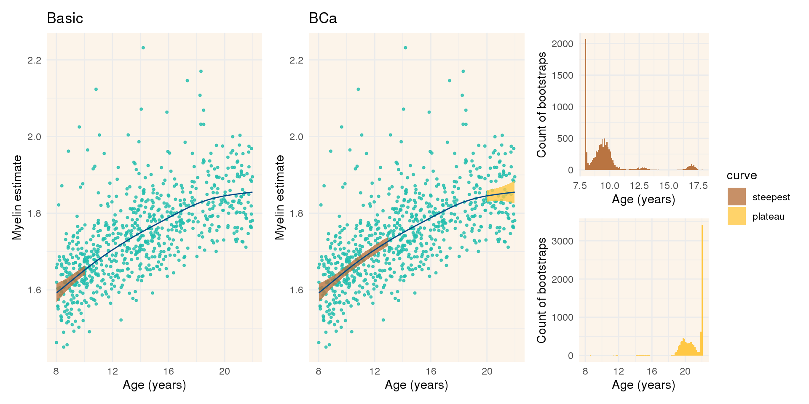
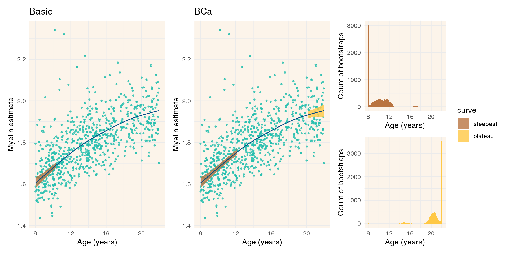

Myelin Trajectories: GAM bootstrap
John Flournoy
2020-06-26
regindex <- 1:400
task_id <- 0
right_side <- '~ s(Age) + Sex + Scanner + numNavs_sum'
if(task_id == 0){
left_side <- 'mean_wholebrain_T1wT2w'
} else {
left_side <- paste0('myelin_schaefer_v', task_id)
}
mf_form <- as.formula(paste0(left_side, gsub('s\\((.*)\\)', '\\1', right_side)))
form <- as.formula(paste0(left_side, right_side))
d <- model.frame(formula = mf_form, data = hcpd_data)
boot_fn <- file.path('boot_out_dir', paste0('bootstrap_', sprintf('%dk_', 1e4/1e3), task_id, '.rds'))
aboot <- readRDS(boot_fn)
boot_dt_fn <- file.path('boot_out_dir', paste0('bootstrap_dt_', sprintf('%dk_', 1e4/1e3), task_id, '.rds'))
boot_dt <- readRDS(boot_dt_fn)
boot_dt[, Age := age][, age := NULL]
fit <- mgcv::gam(form, data=d, method="REML")
add_to_fit <- coef(fit)[['(Intercept)']] + mean(d$numNavs_sum)*coef(fit)[['numNavs_sum']] + .5*coef(fit)[['SexM']]
pred <- data.table(
gratia::evaluate_smooth(
fit, 'Age',
n = 500,
unconditional = TRUE))[, spline.est := est + add_to_fit][, est := NULL]
data.table::setkey(pred, Age)
data.table::setkey(boot_dt, Age)
pred_boot <- pred[boot_dt, roll = TRUE]Whole brain plot
ci_type <- c('basic' = 'Basic', 'bca' = 'BCa')
index_labels <- c('501' = 'Steepest age', '502' = 'Plateau age')
index_color <- c('501' = apal[2], '502' = apal[4])
p <- lapply(names(ci_type), function(t){
ggplot(pred_boot[type == t], aes(x = Age, y = spline.est)) +
geom_point(data = d, aes_string(x = 'Age', y = left_side), size = .75, alpha = .8, color = apal[[5]]) +
geom_ribbon(aes(ymin = spline.est - 2*se, ymax = spline.est + 2*se, fill = curve), alpha = .8) +
scale_fill_manual(limits = c('steepest', 'plateau'), breaks = c('steepest', 'plateau'), values = apal[c(2,4)]) +
theme_minimal() +
theme(panel.background = element_rect(fill = apal[[3]], size = 0)) +
geom_line(color = apal[[1]]) +
labs(title = ci_type[t], x = 'Age (years)', y = 'Myelin estimate')
})
pp <- patchwork::wrap_plots(p, guides = 'collect')
p2 <- lapply(501:502, function(index){
ggplot(data.frame(x = aboot$t[,index]), aes(x = x)) +
geom_histogram(bins = 100, fill = index_color[as.character(index)]) +
theme_minimal() +
theme(panel.background = element_rect(fill = apal[[3]], size = 0)) +
labs(y = 'Count of bootstraps', x = 'Age (years)')
})
pp + patchwork::wrap_plots(p2, guides = 'collect', ncol = 1) + patchwork::plot_layout(widths = c(1, 1, .6))Plots for each Schaefer region
Broken up into groups of ten.
for(chunk in split(regindex[1:40], f = rep(1:4, each = 10))){
## Output
cat(paste0('\n\n## Regions ', paste(range(chunk), collapse = '-'), ' {.tabset}\n\n'))
for(task_id in chunk){
# task_id <- task_id[[1]]
##Data prep
right_side <- '~ s(Age) + Sex + Scanner + numNavs_sum'
left_side <- paste0('myelin_schaefer_v', task_id)
mf_form <- as.formula(paste0(left_side, gsub('s\\((.*)\\)', '\\1', right_side)))
form <- as.formula(paste0(left_side, right_side))
d <- model.frame(formula = mf_form, data = hcpd_data)
boot_fn <- file.path('boot_out_dir', paste0('bootstrap_', sprintf('%dk_', 1e4/1e3), task_id, '.rds'))
boot_dt_fn <- file.path('boot_out_dir', paste0('bootstrap_dt_', sprintf('%dk_', 1e4/1e3), task_id, '.rds'))
aboot <- readRDS(boot_fn)
boot_dt <- readRDS(boot_dt_fn)
boot_dt[, Age := age][, age := NULL]
fit <- mgcv::gam(form, data=d, method="REML")
add_to_fit <- coef(fit)[['(Intercept)']] + mean(d$numNavs_sum)*coef(fit)[['numNavs_sum']] + .5*coef(fit)[['SexM']]
pred <- data.table(
gratia::evaluate_smooth(
fit, 'Age',
n = 500,
unconditional = TRUE))[, spline.est := est + add_to_fit][, est := NULL]
data.table::setkey(pred, Age)
data.table::setkey(boot_dt, Age)
pred_boot <- pred[boot_dt, roll = TRUE]
## Output
cat(paste0('\n\n### ', left_side, '\n\n'))
ci_type <- c('basic' = 'Basic', 'bca' = 'BCa')
index_labels <- c('501' = 'Steepest age', '502' = 'Plateau age')
index_color <- c('501' = apal[2], '502' = apal[4])
p <- lapply(names(ci_type), function(t){
ggplot(pred_boot[type == t], aes(x = Age, y = spline.est)) +
geom_point(data = d, aes_string(x = 'Age', y = left_side), size = .75, alpha = .8, color = apal[[5]]) +
geom_ribbon(aes(ymin = spline.est - 2*se, ymax = spline.est + 2*se, fill = curve), alpha = .8) +
scale_fill_manual(limits = c('steepest', 'plateau'), breaks = c('steepest', 'plateau'), values = apal[c(2,4)]) +
theme_minimal() +
theme(panel.background = element_rect(fill = apal[[3]], size = 0)) +
geom_line(color = apal[[1]]) +
labs(title = ci_type[t], x = 'Age (years)', y = 'Myelin estimate')
})
pp <- patchwork::wrap_plots(p, guides = 'collect')
p2 <- lapply(501:502, function(index){
ggplot(data.frame(x = aboot$t[,index]), aes(x = x)) +
geom_histogram(bins = 100, fill = index_color[as.character(index)]) +
theme_minimal() +
theme(panel.background = element_rect(fill = apal[[3]], size = 0)) +
labs(y = 'Count of bootstraps', x = 'Age (years)')
})
print(pp + patchwork::wrap_plots(p2, guides = 'collect', ncol = 1) + patchwork::plot_layout(widths = c(1, 1, .6)))
}
}Regions 1-10
myelin_schaefer_v1
myelin_schaefer_v2
myelin_schaefer_v3
myelin_schaefer_v4
myelin_schaefer_v5
myelin_schaefer_v6
myelin_schaefer_v7
myelin_schaefer_v8
myelin_schaefer_v9
myelin_schaefer_v10
Regions 11-20
myelin_schaefer_v11
myelin_schaefer_v12
myelin_schaefer_v13
myelin_schaefer_v14
myelin_schaefer_v15
myelin_schaefer_v16
myelin_schaefer_v17
myelin_schaefer_v18
myelin_schaefer_v19
myelin_schaefer_v20
Regions 21-30
myelin_schaefer_v21
myelin_schaefer_v22
myelin_schaefer_v23
myelin_schaefer_v24
myelin_schaefer_v25

myelin_schaefer_v26

myelin_schaefer_v27
myelin_schaefer_v28
myelin_schaefer_v29
myelin_schaefer_v30
Regions 31-40
myelin_schaefer_v31
myelin_schaefer_v32
myelin_schaefer_v33

myelin_schaefer_v34
myelin_schaefer_v35
myelin_schaefer_v36
myelin_schaefer_v37
myelin_schaefer_v38